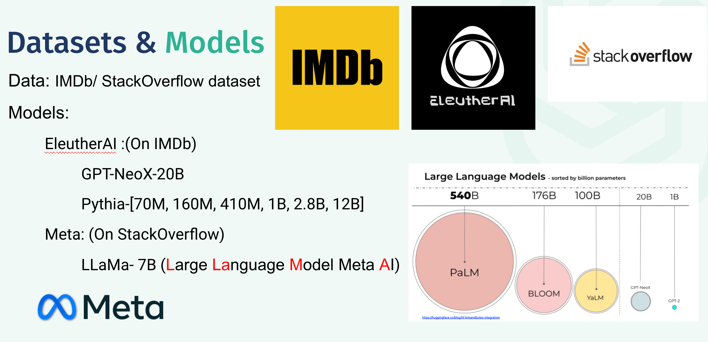
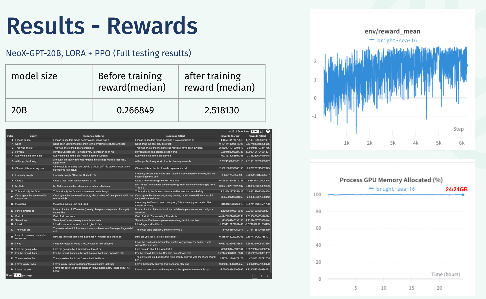
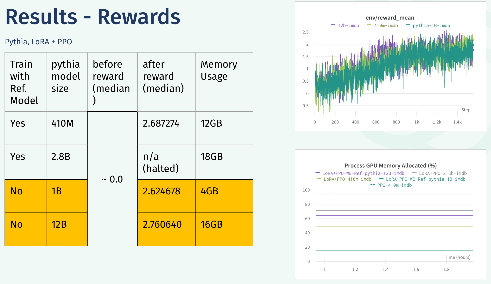
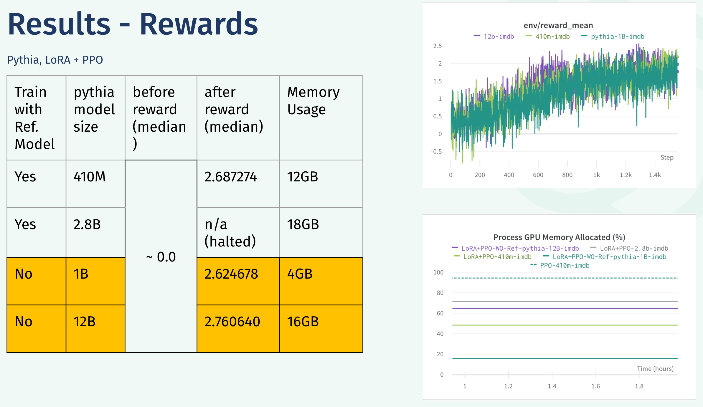
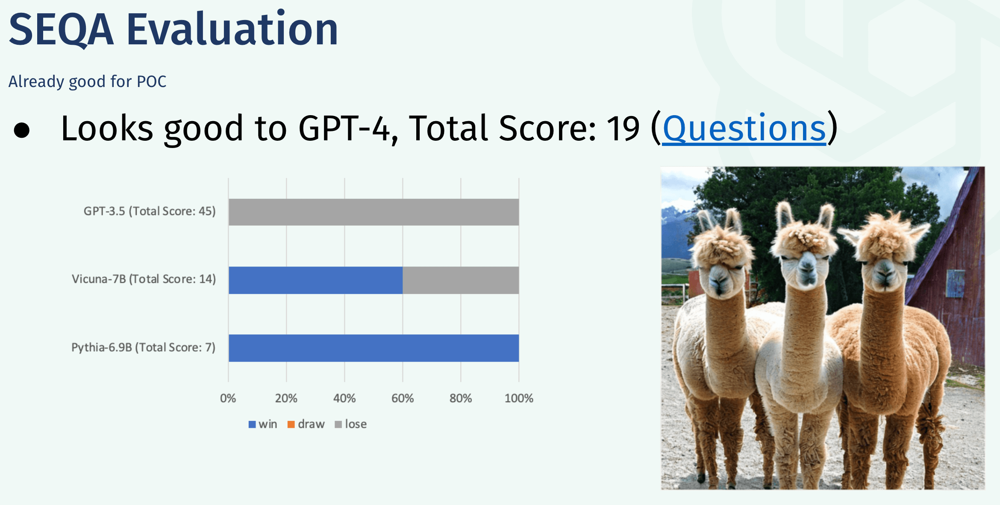

Discover how to scale generative AI applications cost-effectively by deploying open-source models with vLLM on Kubernetes, enabling high-volume data processing without relying on expensive third-party APIs.

In this blog post, we will walk you through the process of efficiently fine-tuning your own LLM. The project aimed to explore the optimization and fine-tuning of Large Language Models (LLMs) using Reinforcement Learning from Human Feedback (RLHF) and Low-Rank Adapter (LoRA) on IMDB and StackOverflow data sets.
You know when we watch movies and then scroll through reviews on IMDb to see if our sentiments align with others? Or when we are stuck in the middle of a coding challenge and scour Stack Overflow for the answer? Now, imagine having your own language model that can mimic this process – writing movie reviews and answering Stack Overflow questions. That's exactly what our team, GPT-is-all-we-need, is working towards.
Our objective is to fine-tune large language models (LLMs) using Reinforcement Learning (RL), specifically for two purposes: generating movie reviews and answering Stack Overflow questions. We chose these topics because we felt training the models on these databases can help generate industry-specific responses and ultimately assist in job hunting. Plus, there's the added benefit of being able to understand and implement Reinforcement Learning with Human Feedback (RLHF). This method allows the integration of human input into the training process, thereby refining its performance and generating responses that are more human-like and accurate. Furthermore, understanding memory optimization techniques like LORA is crucial for efficient deployment and scalability of AI models. As the demand for AI solutions increases, optimizing memory usage is essential to save computational resources and reduce costs.
However, the road to fine-tuning LLMs wasn't without its bumps. We faced several challenges. The primary issue was that smaller models suffered from performance inefficiencies. Due to their small size, these models, even with fewer parameters, couldn't generate coherent movie reviews or Stack Overflow answers. So, we decided to focus on larger language models, specifically models with more than 1 billion parameters. But then we hit another wall - extreme memory constraint. For instance, the largest model we trained, GPT-neoX, has 20 billion parameters, which would require a whopping 80GB GPU memory without optimization. But, thanks to memory optimization techniques like Low Rank Adapters, mix-precision training, gradient accumulation and checkpointing, we successfully managed to load the models into our GPU with only 24GB of RAMs.
The main tasks were divided as follows:
We first loaded the pre-trained LLMs in 8-bit precision and added low-rank adapters onto the frozen 8-bit model to make these adapters trainable, significantly reducing the number of trainable weights. Then, we fine-tuned the model for text generation on the IMDb dataset and merged the learned adapter layers into the base model’s weights, enabling the base model to gain the knowledge learned during fine-tuning.
Here is the WandB logs during the fine-tuning of the NeoX-20b model over IMDB dataset:
Finally, we used a popular deep learning algorithm called PPO to fine-tune the merged language model using RL. We had two copies of the merged language model from the previous step, active and reference, and used a reward model for calculating the rewards, which is the sentiment of the movie reviews. The goal was to optimize the active model to maximize these rewards.
We used different datasets and models for this project. The dataset was a combination of data from IMDb and Stack Overflow. The IMDb dataset comprised 20,000 movie reviews, while the Stack Overflow dataset included programming-related questions and answers. For the movie reviews, we used GPT-NeoX-20B, Pythia (70M, 160M, 410M, 1B, 2.8B, and 12B). For the Stack Overflow dataset, we used the LLaMa model. The LLaMa-7B was particularly impressive despite the memory constraint issues.
Now, let's talk results. After fine-tuning, our largest language model, NeoX-GPT with 20B parameters, could generate specific movie reviews with more positive sentiments. Below are some sample inference results:
Here is the average and median sentiments over 64 samples (only 25 are shown), and the changes in reward during reinforcement learning. The average and median rewards increased considerably after fine-tuning and PPO.
The Pythia models were a mixed bag - smaller ones like the 70M and 160M couldn't respond to the reward model's signal, stalling the fine-tuning. However, the larger Pythia models with more than 410M parameters were successfully trained with PPO and could generate reviews with significantly higher sentiment scores.
 

On the Stack Overflow front, we used the same three-step fine-tuning process but stopped at the second step - training a reward model - because unlike sentiment analysis, scoring question quality from a purely linguistic perspective without additional knowledge was challenging. Nevertheless, we evaluated the performance of several models on this task. Our fine-tuned vicuna-SE model showed slight improvement compared to the original vicuna and was significantly better than the base Pythia model. Even though it didn't outperform GPT3.5, it still displayed remarkable performance considering its smaller size.
Through this project, we successfully demonstrated the fine-tuning of Large Language Models using Reinforcement Learning from Human Feedback and Low-Rank Adapter on the IMDB and StackOverflow datasets. The results were encouraging, with significant improvements in model performance post-fine-tuning and PPO.
While we made significant strides in optimizing Large Language Models for specific tasks, we are aware that the potential for further improvement and exploration is vast. Due to time constraints, we were unable to execute more hyper-parameter tuning, but we aim to address this in future work. We believe that our findings provide a solid foundation for future research in the field and we hope to explore this exciting area of AI/NLP further.
To access our code, trained models, and more detailed analysis, check out our project repository. We hope our work serves as a useful reference for your own experiments and research!
Discover how to scale generative AI applications cost-effectively by deploying open-source models with vLLM on Kubernetes, enabling high-volume data processing without relying on expensive third-party APIs.
Uses AI to analyze online press releases, to track mining-related surveys and their completion timelines, to help Rio Tinto better invest.
Train your own large language models (LLMs) to generate industry-specific responses, using reinforcement learning and memory optimization techniques.
Winning Project of nwHacks - classifying images using AI, discovering related digital contents, and rendering them in AR.
If you are interested in learning more about my work, feel free to get in touch.